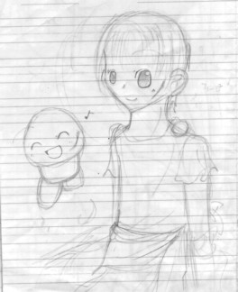
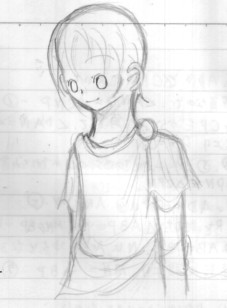
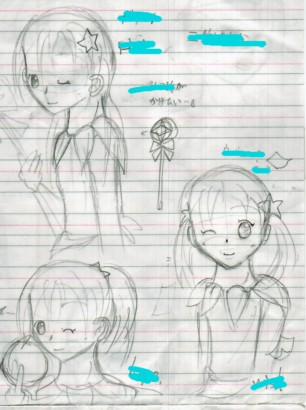

少し横にはみ出してますけど…；
今度は擬人化カーレッジ単品。またテスト期間中に描いｔ（略。
星流が小さくなってしまって凹みました。
ちなみに左上のは自分に発破かけるために描いた「勉強しろ」とため息をついているカーレッジ原型。
（残念ながら効果はありませんでしたorz

これも多分テスト期間ｔｙ…げふげふ。
クリスケの擬人化と原型のコラボレーションです。
少し横にはみ出してますけど…；
今度は擬人化カーレッジ単品。またテスト期間中に描いｔ（略。
星流が小さくなってしまって凹みました。
ちなみに左上のは自分に発破かけるために描いた「勉強しろ」とため息をついているカーレッジ原型。
（残念ながら効果はありませんでしたorz

クリスケ擬人化単品。数学のノートからこんにちは。
縮小をしすぎて細かい部分がよく見えない…；
多分５〜１０分で書きあげた落書き。

えーっと、これは誰かなー？（すっとぼけてみる。
四勇者出演予定のとある方達。原版を読んだ方なら分かるのではないかと。
ちなみに名前やら何やらが横に書いてありましたがキレーにペンで邪魔しておきましたｖ（ましたｖって…。